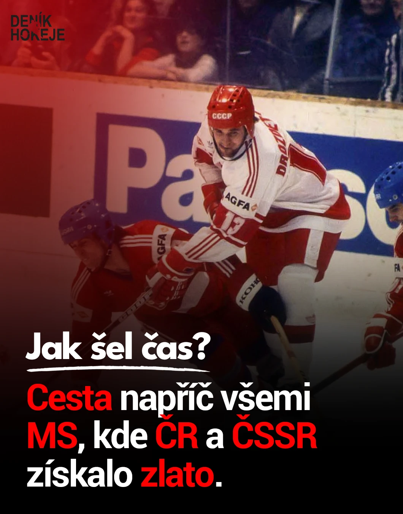
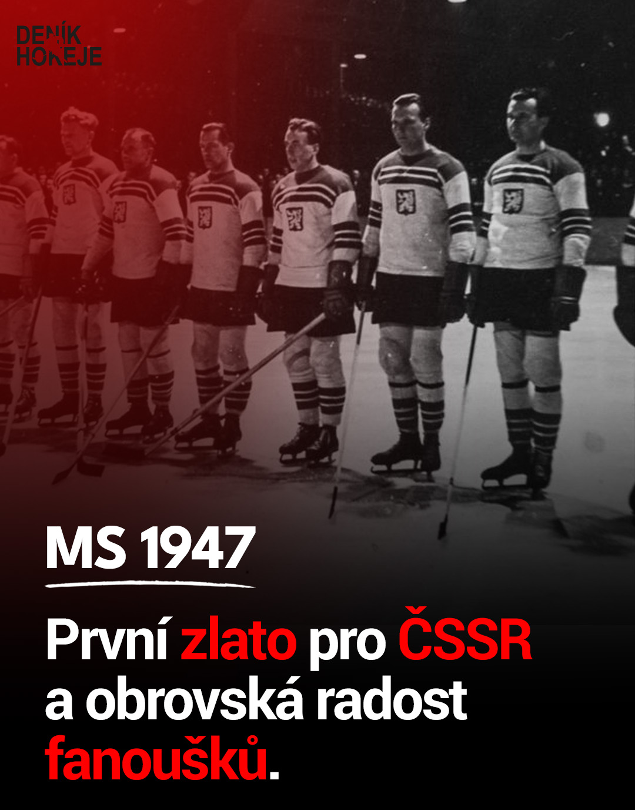
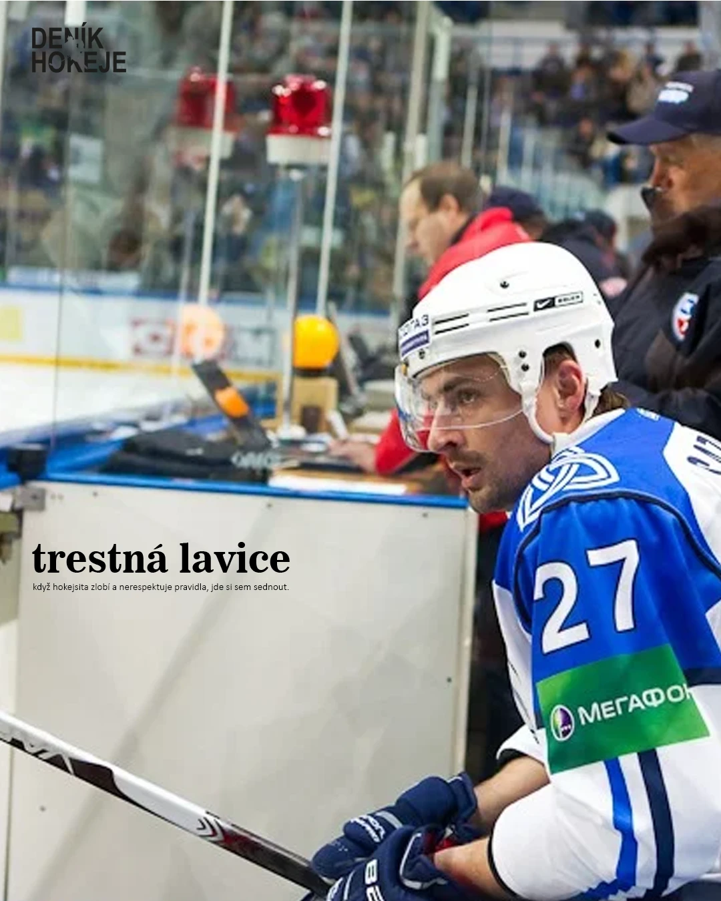
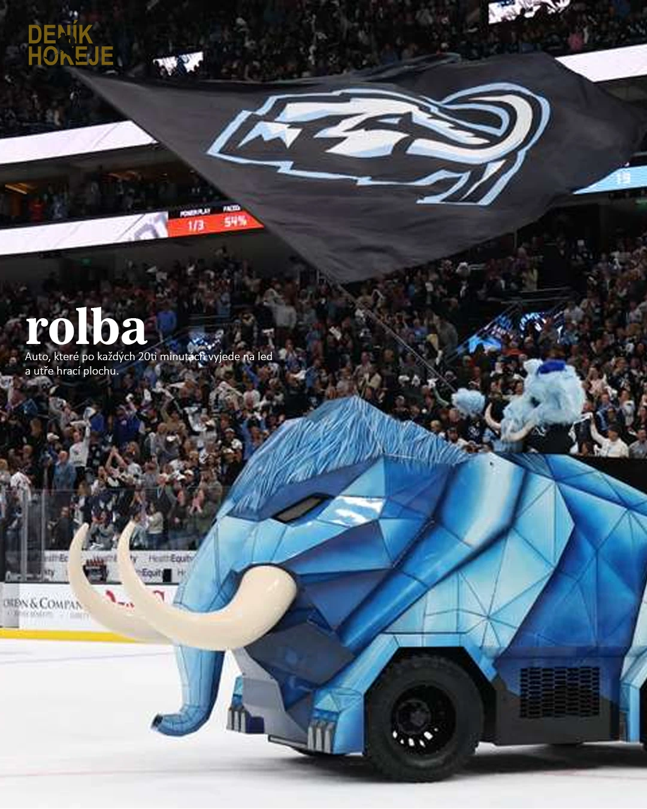
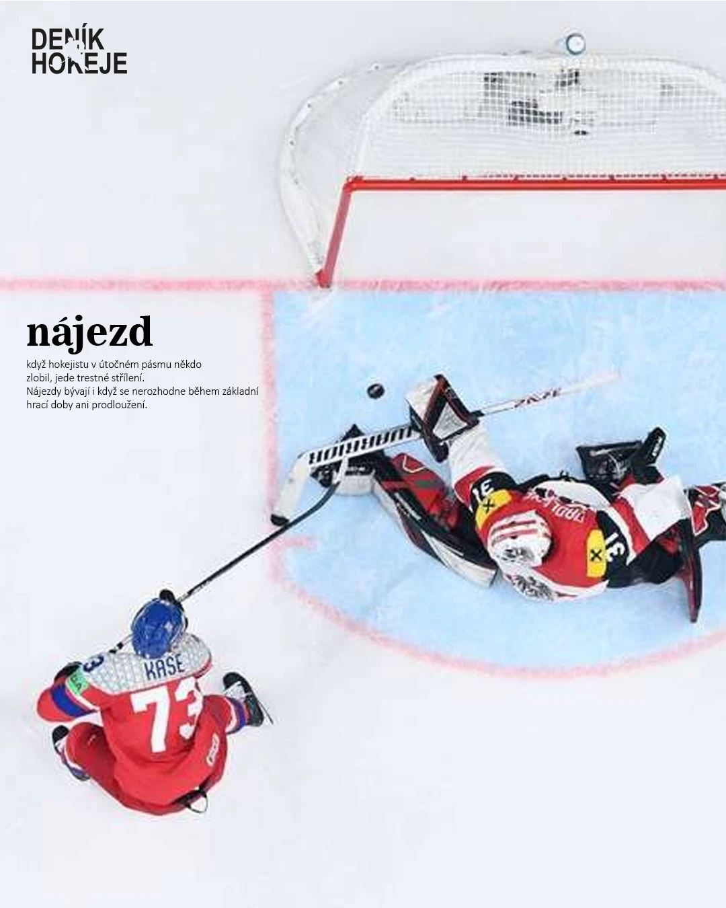

Slova v hvězdičkách *takto* budou červeně. Fotku posuneš tažením přímo v náhledu.
1 / 1
1080 × 1350 px
Šablona
Fotka
Text
Hvězdičky *slovo* = červená. Enter = vlastní zalomení řádku.
Pojem
Barva textu
Logo
Caption
Reference a ukázky
Galerie
Nahoře ukázkový carousel vygenerovaný ve tvém stylu. Dole tvoje posty, podle kterých engine styl kopíruje.
Ukázka: MS 2010, 5 slajdů
Ukázkové fotky: Jarba (CC BY 3.0), Dan4th Nicholas (CC BY 2.0), Voltmetro (CC0), Wikimedia Commons.
Tvoje posty

Titulek · úvodní slajd

Titulek · MS 1947

Slovníček · trestná lavice

Slovníček · rolba

Slovníček · nájezd
Modul B · /thumbnail
Náhledovka na YouTube
Stejný vizuální jazyk jako posty: červený přechod, bílý nadpis s podtržením a 1–3 slova obřím písmem.
Test čitelnosti: 168 px, jak ji uvidí divák v mobilu
Prompt na fotku (EN)
Professional sports editorial photograph, Czech ice hockey players in white national team jerseys celebrating a world championship gold on an outdoor stage in Prague, one veteran forward in the center holding the trophy above his head, mouth open in a shout of joy, a sea of fans with phones in the foreground, shot on Canon EOS-1D X with 70-200mm f/2.8, natural evening light mixed with stage lights, real skin texture, sweat and stubble, slight film grain, subject in the right two thirds, empty space bottom left for headline text, 16:9
Negative prompt
plastic skin, airbrushed, CGI, 3d render, oversaturated, glowing eyes, extra fingers, warped jersey numbers, fake logos, text artifacts, HDR halo, cartoon
Varianta B
Text „JÁGR SE VRÁTIL“ (Jágr červeně), fotka Jágra s medailí v davu, emoce: hrdost.
Modul A · /scenar
Šest zápasů, které změnily český hokej
Nagano 1998 · cílová délka 12 minut · začátek scénáře a osnova kapitol.
0:00–0:10
Hook
[VISUAL: černá obrazovka, jen zvuk bruslí. Střih na zpomalený záběr: Lindros najíždí na Haška.]
Dvacátého února 1998. Pět nejlepších střelců Kanady. Jeden brankář z Pardubic. A otázka, kterou si hokejová Kanada klade dodnes: proč na led nešel Wayne Gretzky?
Tohle je příběh šesti zápasů, které změnily český hokej. Projdeme semifinále minutu po minutě, rozebereme rozstřel, o kterém se v Kanadě mluví dodnes, a na konci se dostaneme k jedné střele od modré čáry, po které zaplnily pražské ulice desetitisíce lidí.
Kap. 1
Turnaj, na který čekal svět
[VISUAL: archiv, zahájení her v Naganu]
NHL poprvé přerušila sezonu a pustila hráče na olympiádu. Kanada a USA jsou favorité, Česko outsider s jedním trumfem.
Kap. 2
Dominátor
[TEXT NA OBRAZOVCE: Hart Trophy 1997]
Úřadující držitel Hart Trophy pro nejužitečnějšího hráče NHL.
Kap. 3
Semifinále minutu po minutě
[TEXT NA OBRAZOVCE: 49:46 Šlégr · 58:57 Linden · prodloužení]
Šlégrův gól ve třetí třetině, Lindenovo vyrovnání 63 sekund před koncem, deset minut prodloužení bez gólu.
Kap. 4
Pět nájezdů, jedno rozhodnutí
Reichel trefí tyčku a puk zapadne do branky. Hašek pak chytá Fleuryho, Bourquea, Nieuwendyka, Lindrose a Shanahana. Gretzky sedí na střídačce.
[OVĚŘIT: Lindros – břevno, nebo tyčka]
Kap. 5
Finále: jedna střela od modré
Procházka, Svoboda, gól. Hašek zastaví všech dvacet střel a Česko má zlato.
Závěr
Výzva k akci
Kde jste byli vy, když padl gól Svobody? Napište to do komentářů. A jestli chcete díl o tom, proč Gretzky na nájezd nešel, dejte odběr.
Modul D · /napady
Nápady na videa a posty
Název, hook a úhel pohledu, koncept náhledovky a proč to bude fungovat.
Série · Jak šel čas
Všechna česká zlata z MS v jednom carouselu
Hook
Od roku 1947 po 2024. Který titul byl nejsladší?
Náhledovka
Dvě generace se stejným pohárem. Text „1947 → 2024“.
Proč to bude fungovat
Nostalgie a otázka do komentářů. Navazuje na tvoji nejsilnější sérii.
Série · Slovníček
Buly, icing, hattrick: slova, která musí znát každý fanoušek
Hook
Víš, proč se vhazování říká buly?
Náhledovka
Detail vhazování, pojem patkovým písmem.
Proč to bude fungovat
Slovníček si lidé ukládají a posílají kamarádům, kteří hokeji nerozumí.
Kontroverze
Proč Gretzky nešel na nájezd?
Hook
Největší střelec historie seděl v Naganu na střídačce, zatímco Kanada vypadla.
Náhledovka
Gretzky s ručníkem proti Haškovi s rukama nahoře. Text „PROČ ON?“
Proč to bude fungovat
Otevřená otázka, kterou řeší české i kanadské publikum.
Design system
Brand Deník Hokeje
Barvy, písma a pravidla převzatá z tvých postů.
Deník červená#FE0000
Černá#000000
Bílá#FFFFFF
Červený přechodzleva shora
Logo tmavé#181818
Logo zlaté#C9A44C
Nadpis s podtržením Montserrat ExtraBoldMS 1947
Hlavní text Roboto BoldPrvní zlato pro ČSSR a obrovská radost.
Pojem ve slovníčku Gelasio Boldtrestná lavice
Vysvětlení Open Sanskdyž hokejista zlobí a nerespektuje pravidla, jde si sem sednout.
Titulek
Fotka přes celý slajd, červený přechod zleva shora, černý spodek. Krátký nadpis s ručně taženým podtržením, pod ním 2–3 řádky a 2–4 slova červeně.
Slovníček
Fotka bez překryvu. Pojem malými písmeny patkovým písmem, pod ním drobné vysvětlení. Barva textu podle fotky, logo černé, bílé nebo zlaté.
Formáty
Instagram a Facebook 1080 × 1350. TikTok 1080 × 1920, text mimo spodních 400 px. YouTube 1280 × 720.
Logo
Nápis DENÍK HOKEJE vlevo nahoře, asi 150 px široký. Kulaté logo jen na profilovku a závěr videa.
Uložení obrázkuTady nejde soubor stáhnout přímo. Podrž obrázek (mobil) nebo na něj klikni pravým tlačítkem a zvol „Uložit obrázek“.